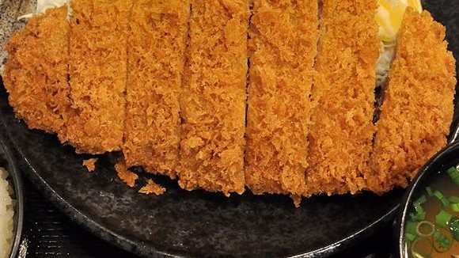
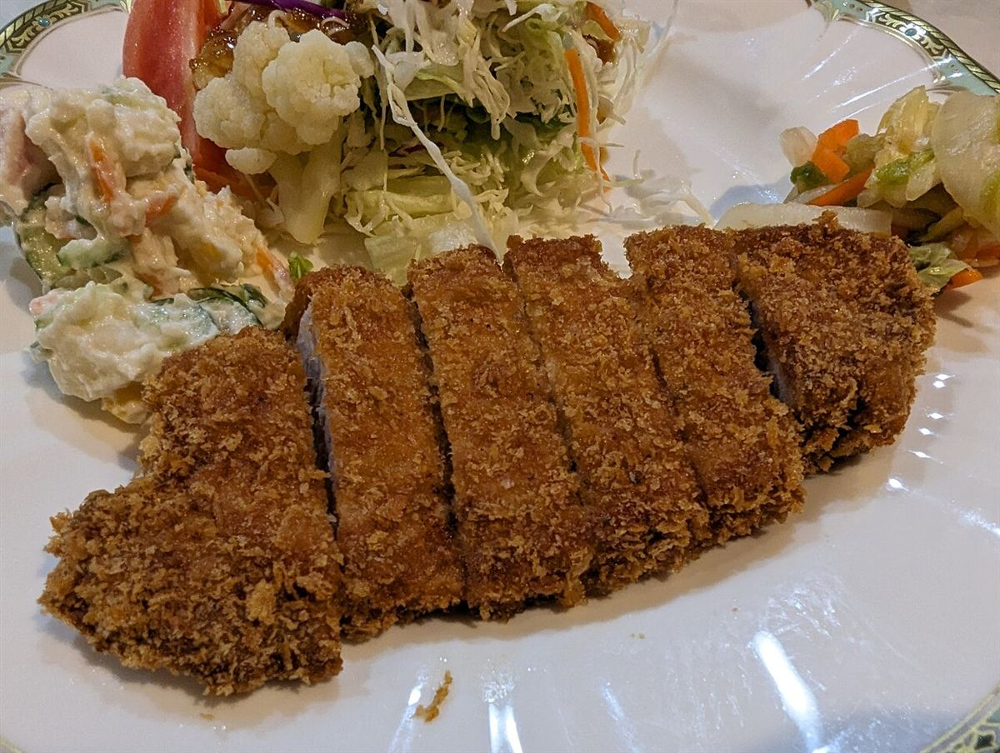
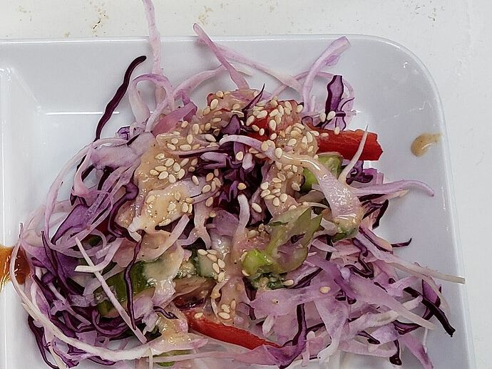
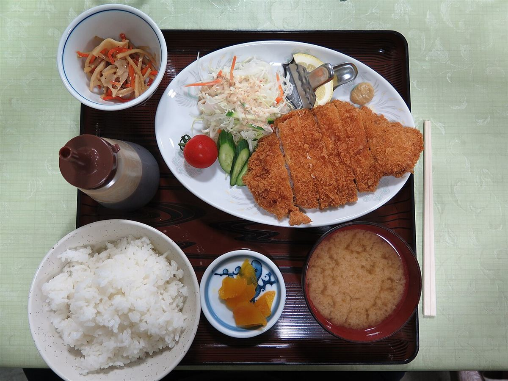

Photo: イメージ

まず衣の音を
切り分けたら、まずはひと口。衣のサクッという音と香ばしさは、揚げたてならではの楽しみと言われます。
以下は、とんかつという料理の一般的な楽しみ方です。

切り分けたら、まずはひと口。衣のサクッという音と香ばしさは、揚げたてならではの楽しみと言われます。

はじめは何も付けずに味わい、肉そのものの旨みとやわらかさを確かめる、という方もいらっしゃいます。

千切りのキャベツをはさむと、口の中がさっぱりして、最後まで食べやすいと言われます。

白いご飯と一緒に、お味噌汁やお漬物との取り合わせを楽しむのも、とんかつの楽しみ方のひとつです。
※写真と文章は、とんかつ全般のイメージです。
とんかつを揚げるうえで大切と言われることを、一般論として3つ。